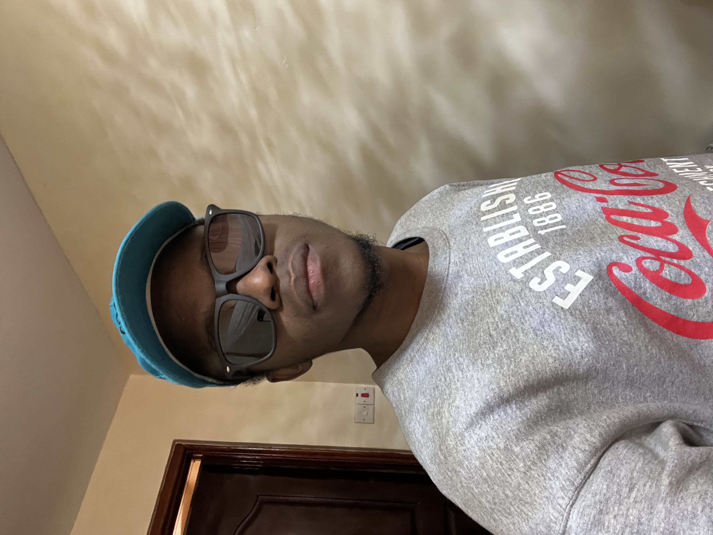

TIMOTHY RICHARDS
Email: richardstim714@gmail.com | Cell: +254 741 404 824 | Location:
Nairobi, Kenya
PROFESSIONAL SUMMARY
- Excellent communication, organizational, and research skills
-
Proficient in resource mobilization, financial management, budget
management, and donor relations
- Self-motivated and skilled in teamwork
-
Experienced in working in multicultural, academic, and business
environments
SKILLS
Conversant in: United Nations Donor Relations and
Resource Mobilization System, Financial Management, Donor Reporting,
Market Research, and Grant Management.
Tools: Microsoft Office Suite, Power BI, SAP/ERP, United
Nations UMOJA, Adobe CS, Canva
Spoken Languages: English, Kiswahili, Luo
EXPERIENCE
08/2023 to Current - Resource Mobilization Consultant
UN – Habitat (United Nations Human Settlements Programme)
- Nairobi, Kenya
-
Provides extensive support on conceptual strategy development,
management of the implementation of overall strategies, and intra- and
inter-divisional/departmental policies and procedures to the Officer In
charge of Donor Relations and Strategic Resource Partnerships Unit,
External Relations and Partnerships Branch, the Resource Mobilization
Steering Committee, and other senior management.
-
Coordinate the online donate now campaign and workplace campaign to
promote the agencies resource mobilization efforts and provide regular
reporting on the same.
-
Supports the creation of resource mobilization plans at the regional,
branch, and divisional levels as well as plans aimed at various donor
types, such as corporations, foundations, and philanthropists.